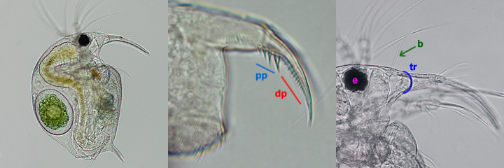
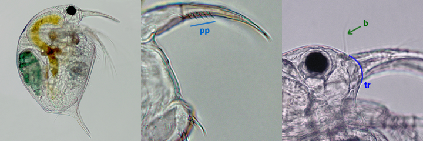

Click on the image which your specimen most closely resembles.
-
Choice 1 of 2

Postabdominal claw with stout proximal pecten (pp) and very fine distal pecten (dp) [best seen with an oil immersion: 1000x]. Sensory bristle (b) near midpoint between eye (e) and tip of rostrum (tr) Species: Bosmina longirostris -
Choice 2 of 2

Postabdominal claw with proximal pecten (pp) only; sensory bristle (b) near tip of rostrum (tr). / Sensory bristle (b) near tip of rostrum Go to step 18
Videos for this step
Video: Eubosmina -- Sensory bristle of E. longispina at tip of rostrum (320x)
Eubosmina longispina sensory bristle (320X)
Video: Eubosmina -- Sensory bristle of E. longispina (640x)
Eubosmina longispina sensory bristle (640X)
Video: e longispina pecten 64X
Eubosmina longispina pecten (640X)
Video: Eubosmina -- Proximal pecten of E. longispina
Eubosmina longispina pecten (640X)
Taxonomy
- Phylum
- Arthropoda
- Subphylum
- Crustacea
- Class
- Brachiopoda
- Suborder
- Cladocera
- Family
- Bosminidae